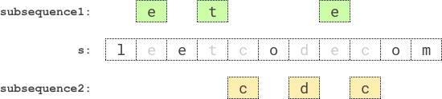

| Category | Difficulty | Likes | Dislikes |
|---|---|---|---|
| Algorithms | Medium | 1008 | 90 |
string | dynamic-programming | backtracking | bit-manipulation | bitmask
google | microsoft | ascend
Given a string s, find two disjoint palindromic subsequences of s such that the product of their lengths is maximized. The two subsequences are disjoint if they do not both pick a character at the same index.
Return the maximum possible product of the lengths of the two palindromic subsequences.
A subsequence is a string that can be derived from another string by deleting some or no characters without changing the order of the remaining characters. A string is palindromic if it reads the same forward and backward.
Example 1:

Input: s = "leetcodecom"
Output: 9
Explanation: An optimal solution is to choose "ete" for the 1st subsequence and "cdc" for the 2nd subsequence.
The product of their lengths is: 3 * 3 = 9.Example 2:
Input: s = "bb"
Output: 1
Explanation: An optimal solution is to choose "b" (the first character) for the 1st subsequence and "b" (the second character) for the 2nd subsequence.
The product of their lengths is: 1 * 1 = 1.Example 3:
Input: s = "accbcaxxcxx"
Output: 25
Explanation: An optimal solution is to choose "accca" for the 1st subsequence and "xxcxx" for the 2nd subsequence.
The product of their lengths is: 5 * 5 = 25.
Constraints:
2 <= s.length <= 12s consists of lowercase English letters only.